Overview
Finding Kuku is a photographic and illustrative exploration of cultural reconnection through personal experience. Named after Ethan's lost relative, Kuku Reweti, the project follows a journey across the East Cape—documenting moments that intertwine personal memory, family history, and broader historic events.
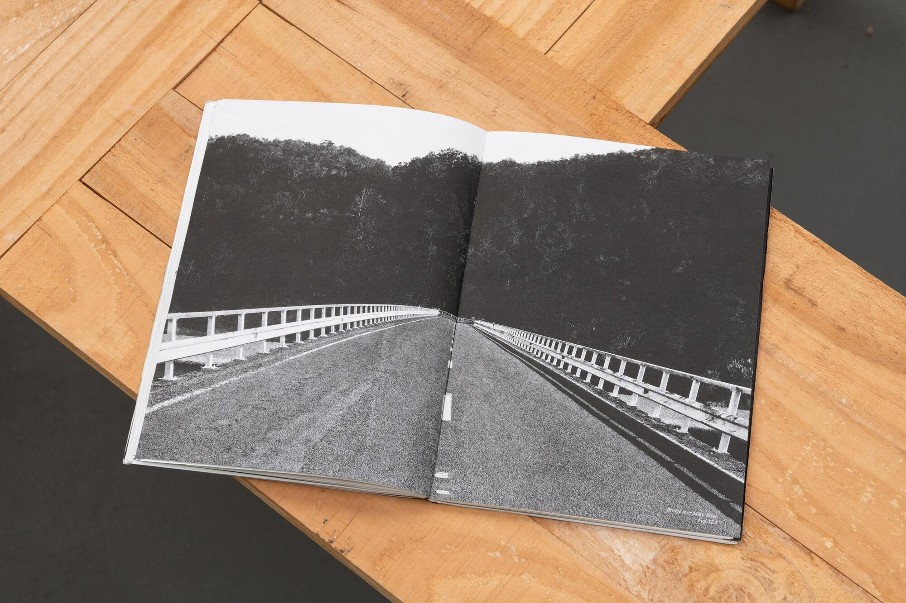
Through photography and drawing, Ethan reflects on the layered and often fractured relationship between identity and whakapapa. The work examines how Māori disconnection from language and place—shaped by colonial policies like the suppression of Te Reo Māori—has instilled generational impacts, including internalised racism and forced urban migration.
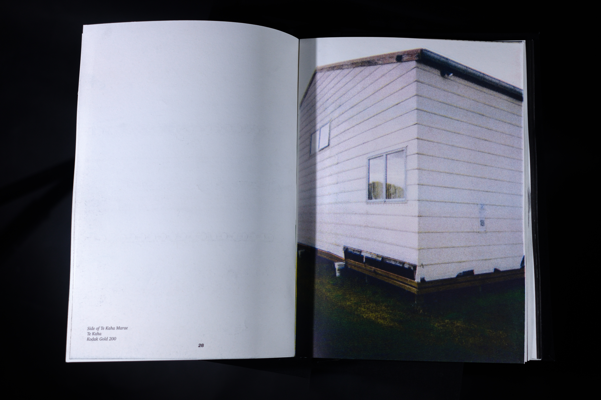
Spanning 88 risograph-printed pages, Finding Kuku is both a record and a reassembly. Riso printing was chosen not just for its aesthetic, but as a deliberate, meditative process: separating and layering individual colour channels mimics the act of piecing together memory. This slow, tactile production becomes an act of re-tracing—transforming printmaking into a method of reflection and reclamation.
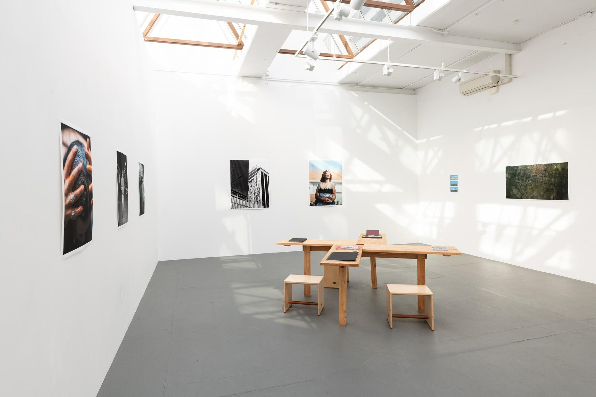
Press & Exhibition
The book was printed by the author in full Risograph. Cover Screenprinted. Exhibited at the 2024 Matariki Exhibition, Mā Wai Rā: New Māori Photobooks Exhibition 2024.
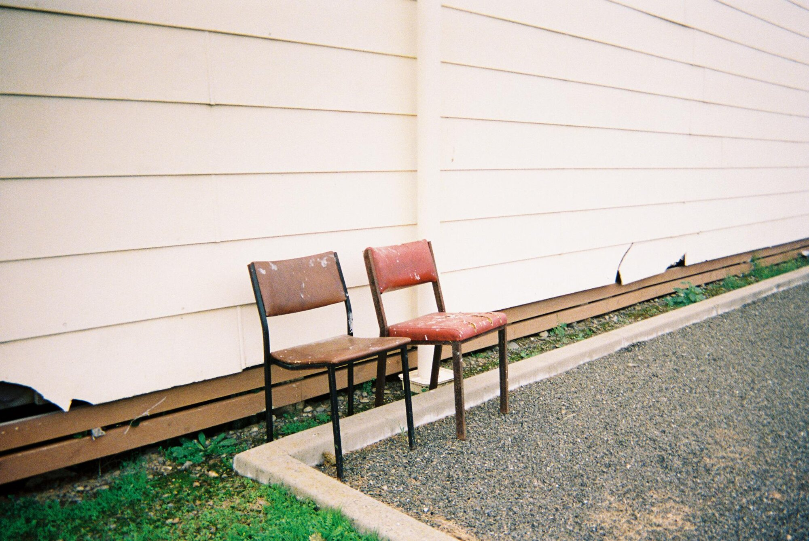
Tools
- Photography
- Mapping
- Print Design
Gallery
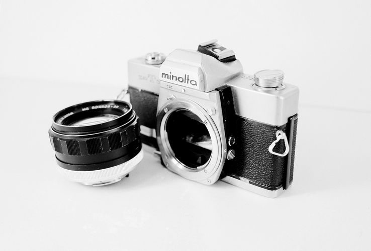
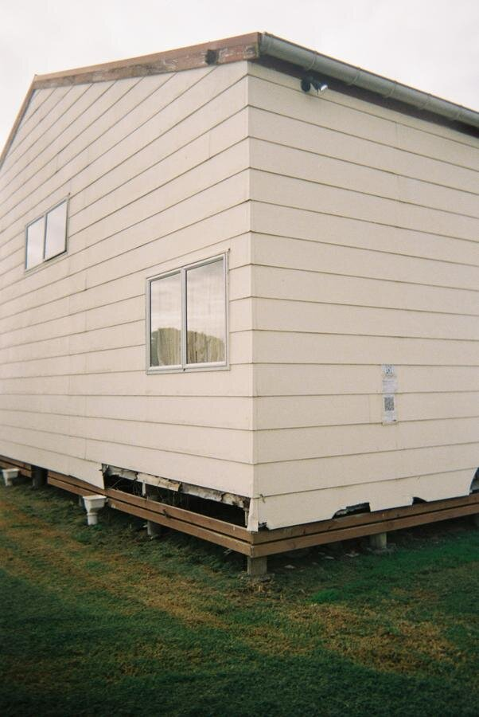
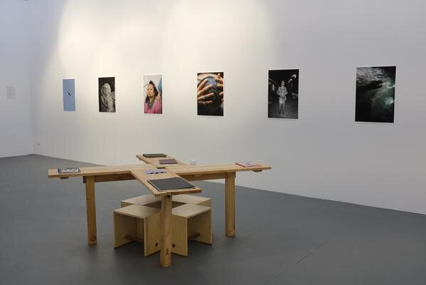
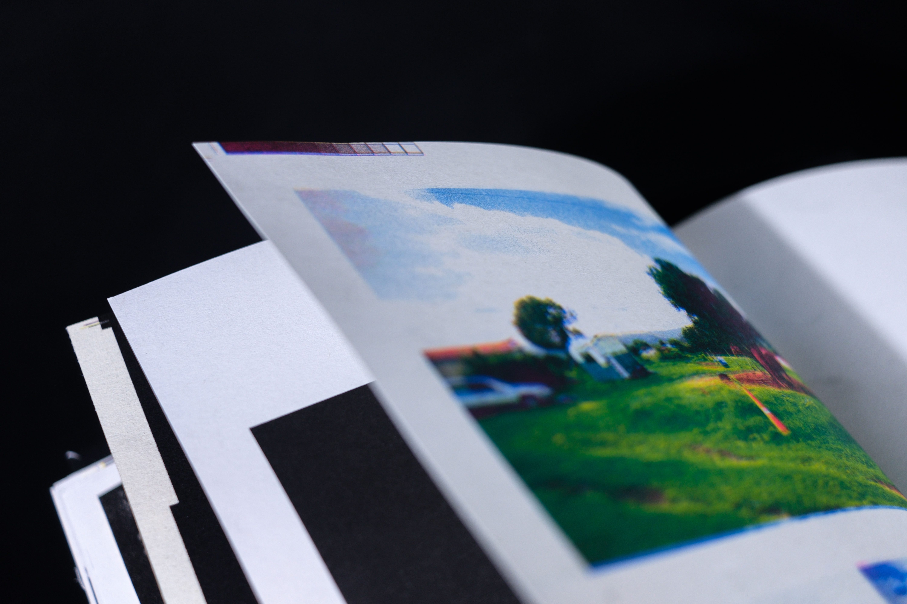
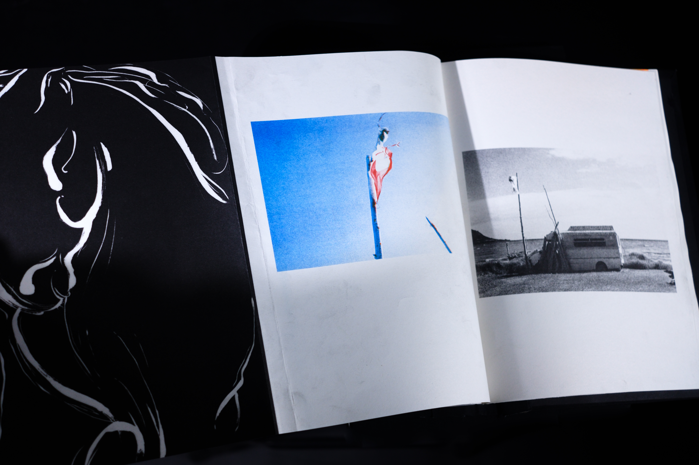
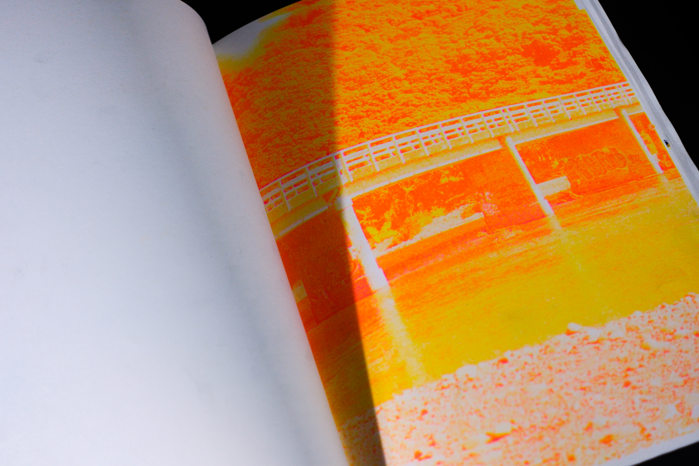
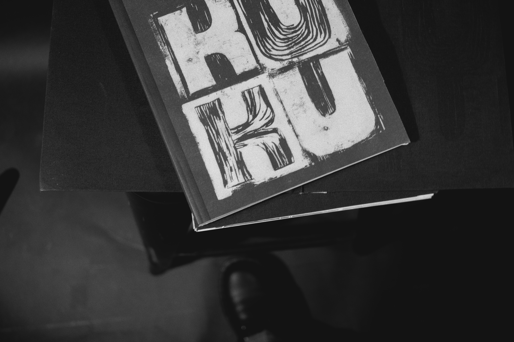